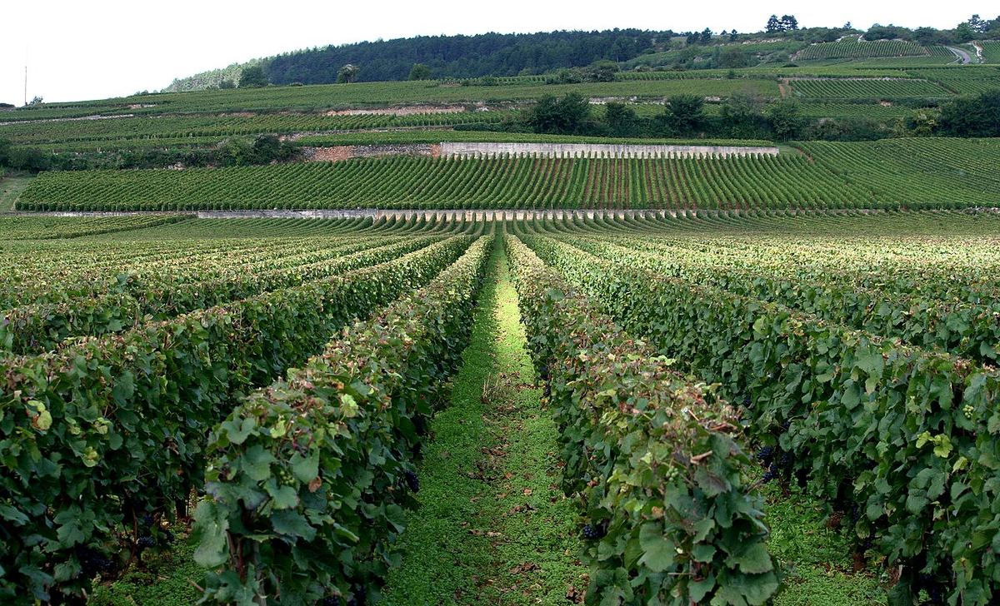

ROUGE
La Côte de Beaune est la moitié méridionale de la Côte-d'Or, de Ladoix aux Maranges. Elle produit certains des blancs de chardonnay les plus réputés du monde, comme le montrachet, le meursault ou le corton-charlemagne, ainsi que des rouges de pinot noir comme le pommard et le volnay.

La Côte de Beaune prolonge vers le sud la Côte de Nuits le long de la même faille, de Ladoix-Serrigny jusqu'aux Maranges, déjà en Saône-et-Loire. La bande de vignes est un peu plus large et les coteaux, généralement plus doux, sont exposés à l'est et au sud-est. Son centre est la ville de Beaune, siège historique du négoce des vins de Bourgogne et de nombreuses maisons, où se trouvent les Hospices de Beaune, fondés en 1443 par Nicolas Rolin, chancelier du duc Philippe le Bon. La vente aux enchères caritative des vins de leurs vignes a lieu chaque année en novembre.
Le climat est semi-continental, comme dans le reste de la Côte-d'Or. Les sols associent calcaires et marnes du Jurassique ; les marnes, plus abondantes qu'en Côte de Nuits, sont jugées particulièrement favorables au chardonnay dans des secteurs comme Meursault, Puligny-Montrachet et Chassagne-Montrachet, tandis que les terres plus riches en argile et en oxydes de fer de Pommard conviennent au pinot noir.
Au nord, la colline de Corton, partagée entre Ladoix-Serrigny, Aloxe-Corton et Pernand-Vergelesses, porte le grand cru rouge Corton, seul grand cru rouge de la Côte de Beaune, et le blanc Corton-Charlemagne, dont le nom rappelle la tradition selon laquelle Charlemagne aurait possédé des vignes sur la colline. Viennent ensuite Savigny-lès-Beaune, Chorey-lès-Beaune et Beaune, riche de nombreux premiers crus. Au sud de Beaune, Pommard est connu pour ses rouges fermes et Volnay pour des rouges plus délicats et parfumés. Au-delà de Monthélie, d'Auxey-Duresses et de Saint-Romain se trouve Meursault, qui n'a pas de grand cru mais des premiers crus très réputés, comme Perrières, Charmes et Genevrières.
Puligny-Montrachet et Chassagne-Montrachet se partagent le grand cru Montrachet et son voisin Bâtard-Montrachet ; Chevalier-Montrachet et Bienvenues-Bâtard-Montrachet sont à Puligny, Criots-Bâtard-Montrachet à Chassagne. Saint-Aubin, Santenay et Maranges complètent la zone. Plusieurs communes peuvent vendre leurs rouges sous l'appellation Côte de Beaune-Villages, et les collines de l'ouest forment les Hautes-Côtes de Beaune.
Contrairement à la Côte de Nuits, la Côte de Beaune produit d'importantes quantités de vin blanc. Ses blancs de chardonnay, habituellement fermentés et élevés en barrique, associent ampleur, fruit et acidité, et ceux des meilleures vignes peuvent vieillir de nombreuses années. Les rouges de pinot noir sont souvent un peu plus souples et plus précoces que ceux de la Côte de Nuits, même si le corton ou les meilleurs premiers crus de Pommard et de Volnay ont un réel potentiel de garde. L'aligoté est cultivé pour l'appellation régionale Bourgogne Aligoté.